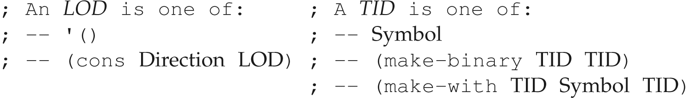
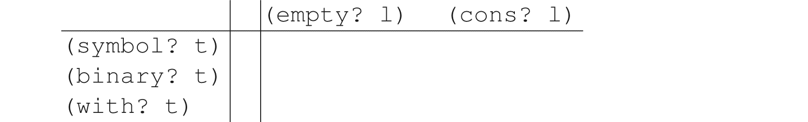

23.5 Designing Functions that Consume Two Complex Inputs
The proper approach to designing functions of two (or more) complex arguments is to follow the general recipe. You must conduct a data analysis and define the relevant classes of data. If the use of parametric definitions such as List-of and short-hand examples such as '(1 b &) confuses you, expand them so that the constructors become explicit. Next you need a function signature and purpose. At this point, you can think ahead and decide which of the following three situations you are facing:
1. If one of the parameters plays a dominant role, think of the other as an atomic piece of data as far as the function is concerned.
2. In some cases the parameters range over the same class of values and must have the same size. For example, two lists must have the same length, or two web pages must have the same length and where one of them contains an embedded page, the other one does, too. If the two parameters have this equal status and the purpose suggests that they are processed in a synchronized manner, you choose one parameter, organize the function around it, and traverse the other in a parallel manner.
3. If there is no obvious connection between the two parameters, you must analyze all possible cases with examples. Then use this analysis to develop the template, especially the recursive parts.
Once you decide that a function falls into the third category, develop a two-dimensional table to make sure that no case falls through the cracks. Let’s use a nontrivial pair of data definitions to explain this idea again:

The left data definition is the usual list definition; the right one is a three-clause variant of TOS. It uses two structure type definitions:
(define-struct with [lft info rght])
(define-struct binary [lft rght])
Assuming the function consumes an LOD and a TID, the table that you should come up with has this shape:

Along the horizontal direction we enumerate the conditions that recognize the sub-classes for the first parameter, here LOD, and along the vertical direction we enumerate the conditions for the second parameter, TID.
The table guides the development of both the function examples and the function template. As explained, the examples must cover all possible cases; that is, there must be at least one example for each cell in the table. Similarly, the template must have one cond clause per cell; its condition combines the horizontal and the vertical conditions in an and expression. Each cond clause, in turn, must contain all feasible selector expressions for both parameters. If one of the parameters is atomic, there is no need for a selector expression. Finally, you need to be aware of the feasible natural recursions. In general, all possible combinations of selector expressions (and optionally, atomic arguments) are candidates for a natural recursion. Because we can’t know which ones are necessary and which ones aren’t, we keep them in mind for the coding step.
In summary, the design of multiparameter functions is just a variation on the old design-recipe theme. The key idea is to translate the data definitions into a table that shows all feasible and interesting combinations. The development of function examples and the template exploit the table as much as possible.